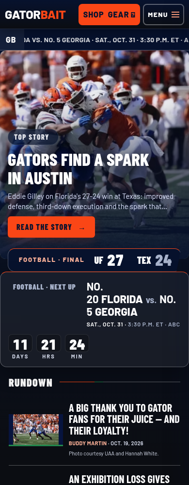
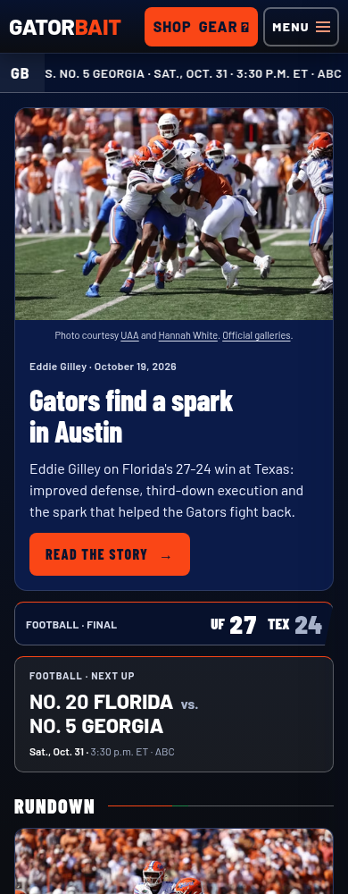

GatorBait MediaA front page made for your phone.
One clear lead story. Real photography, visible credits and a cleaner rhythm for the latest news. Football context stays close without overwhelming the stories.
Open GatorBait →
Before
After